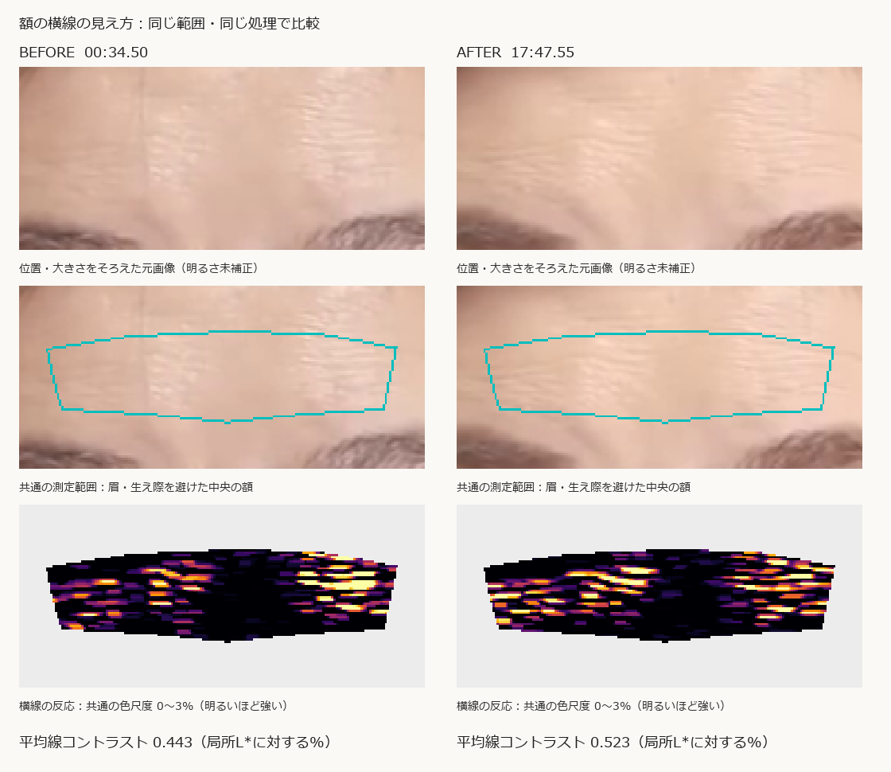

この2枚の測定範囲では、after の横線のコントラストが before より18% 強いという結果です。
これは画像中の線の反応の差です。シワの本数・深さ・重症度の変化率ではありません。
対象：00:34.50 → 17:47.55。1920×1080の元PNGを使用しました。画像右側には弱く出る部分もあり、額全体が一様に変化したわけではありません。

目尻の位置を基準に回転・大きさをそろえ、両画像に共通する額中央を測定しました。範囲は約158×42画素、実際の面積は5,442画素です。眉と髪の生え際を避けています。拡大表示は新しい細部を復元するものではありません。
周囲より暗く写った細い横線を古典画像処理で抽出し、近くの肌の明るさで割って平均しました。小さいほど線のコントラストが弱い指標です。シワ専用に検証済みの検出器ではなく、皮膚の細かな凹凸・光沢・圧縮模様も混ざります。beforeの額には垂れた細い髪も含まれます。縦方向の線には反応しにくい処理ですが、髪の影響を完全に除去したものではありません。
| 測定範囲 | before | after | 相対変化 |
|---|---|---|---|
| 共通領域全体 | 0.443 | 0.523 | +18.0% |
| 画像左側 | 0.394 | 0.567 | +43.9% |
| 中央 | 0.212 | 0.317 | +49.3% |
| 画像右側 | 0.783 | 0.739 | -5.6% |
単位：局所的なL*に対する線の暗さ（%）の領域平均。画像右側の変化は線幅設定によって増減が逆転するため、改善したとは判定しません。
この映像の測定範囲では、after の横線が強く写る傾向があります。一方、化粧でシワが増えた、印象が悪くなった、という結論にはつながりません。眉や目の表情、照明・光沢、ピントが変わっている可能性があります。after の領域平均の明るさL*は 79.00 → 81.67。局所的な明るさで割っても、光の方向や反射の影響は消せません。after は字幕上「口紅をつける前に」の場面です。
次の検証では、眉を上げない表情・同じ照明・同じピントで前後を撮影し、時系列を伏せた人の「シワの目立ちやすさ」評価とこの指標が一致するかを確認します。顔全体の「いきいきした印象」は別の評価項目です。
画像指標を人の評価と照合する考え方は既存の検証研究にもありますが、今回の処理が同様に検証済みという意味ではありません。処理の基本操作：OpenCV Black Hat。